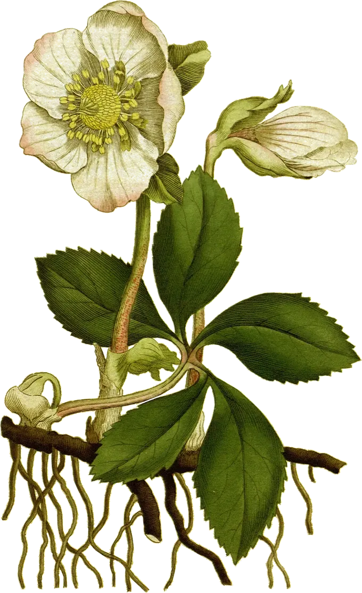
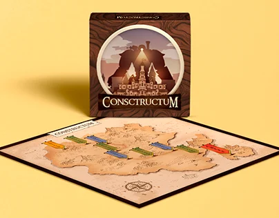
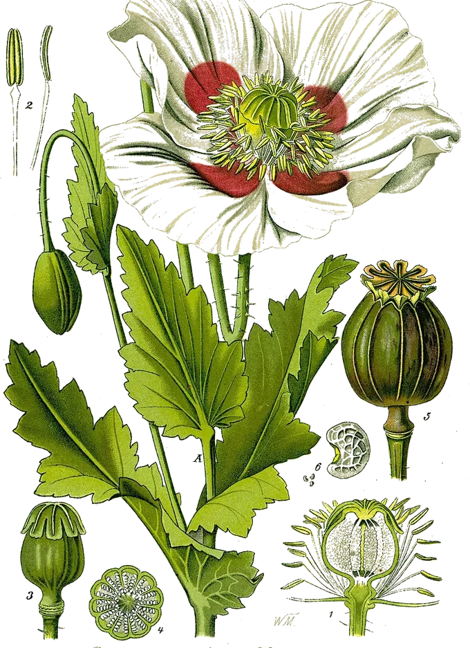

publicidade · branding · direção de arte
Coleciono , invento e transformo em ideias.
Oi, eu sou a Lorine. Entre comunicação, design e histórias, transformo ideias em coisas que a gente sente, vê e lembra.



sobre
Criativa por natureza, curiosa por escolha.
Sou estudante de Publicidade e Propaganda e atuo com comunicação interna na DENSO Brasil. Minha trajetória passa por campanhas, conteúdo, design gráfico e produção audiovisual.
Gosto de observar, imaginar, experimentar e questionar. Me interessam imagens que provocam alguma sensação e projetos que têm algo a dizer. Este espaço é um recorte das coisas que faço, e das que ainda quero criar.
- espécime nº 01 Sensibilidade perceber nuances, sentimentos e detalhes que passam despercebidos.
- espécime nº 02 Inteligência criar com intenção, repertório, pesquisa e estratégia.
- espécime nº 03 Experimentação misturar linguagens, testar e questionar padrões.
trabalhos · direto do Behance
ver portfólio completo ↗ nº 01
nº 01
MUSA
identidade visual · Cuplover ver no Behance ↗ nº 02
nº 02
Yupe
logo e design web ver no Behance ↗ nº 03
nº 03
Proxima Digital Design
identidade visual ver no Behance ↗ nº 04
nº 04
Lu Detlinger
identidade visual ver no Behance ↗
nº 05Constructum
jogo de tabuleiro ver no Behance ↗ nº 06
nº 06
Schweppes
Projeto Fresh ver no Behance ↗cadernos
Coisas que me inspiram.
Uma coleção de referências, afetos e pequenas obsessões visuais. Algumas ideias precisam de espaço para florescer.




contato
Uma boa ideia começa com um oi.
Tem um projeto, uma oportunidade ou só quer trocar ideias?
me manda um e-mail ↗